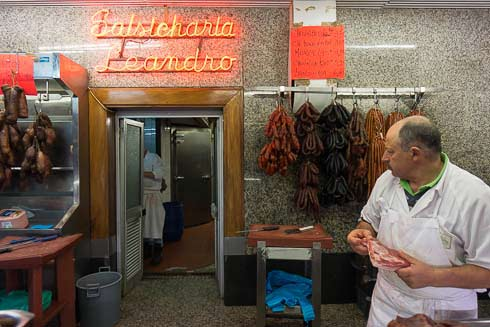

Francesinha is a traditional dish from city of Porto, one of the best dishes from Porto city.
Everyone in Porto will tell you a different best place to eat it, but what all these places have in common is they all go to Mercado do Bolhão to find the best quality ingredients.

If you want to know everything about Mercado do Bolhão you can find it here!
Long story short, Mercado do Bolhão provides the best sausage and fresh sausage to Francesinha mix, the best house to find them is Leandro's Sausage Shop inside Mercado do Bolhão
